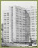

Buildings
In 1895, the California Legislature appropriated $250,000 for the "Affiliated Colleges" of the University of California, to be located on a 13-acre site overlooking Golden Gate Park.In the years after the earthquake, San Francisco rebuilt with remarkable speed but the disaster and epidemics that followed reinforced the need for adequate hospitals.
